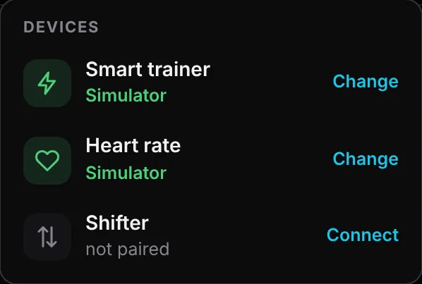
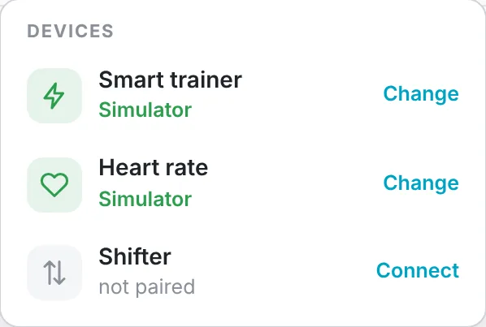

Free for every desk with a trainer.
Native installers for macOS, Windows and Linux are attached to every GitHub release. The download links open the latest one.
macOS
- zwoTrainer_<version>_aarch64.dmg · Apple silicon
- zwoTrainer_<version>_x64.dmg · Intel
macOS 11 or newer. Right-click → Open on first launch, then allow Bluetooth.
Download for macOSWindows
- zwoTrainer_<version>_x64-setup.exe
- zwoTrainer_<version>_x64_en-US.msi
SmartScreen may warn once: More info → Run anyway. Bluetooth on, no pairing needed.
Download for WindowsLinux
- zwoTrainer_<version>_amd64.deb
- zwoTrainer-<version>-1.x86_64.rpm
- zwoTrainer_<version>_amd64.AppImage
Needs BlueZ (bluetoothd) running; .deb and .rpm pull it in.
Download for LinuxzwoTrainer is developed and ridden daily on macOS. The Windows and Linux builds use the same code and are tested on every push, but see less real-world riding — feedback welcome on GitHub.
From download to first interval.
Install & open
Allow the unsigned app once and grant Bluetooth access.
Choose your folder
Point zwoTrainer at the folder with your
.zwoworkouts and plans.Set up your rider
Name, avatar, FTP and weight — or ride an FTP test first.
Pair & ride
Connect trainer, heart rate and controller from the Bluetooth menu, then press start.




Good to know.
Is zwoTrainer really free?
Yes. It is open source, has no subscription and no account. The source code is on GitHub.
Where do I get workouts?
Any Zwift .zwo file works — exported from Zwift, downloaded from workout sites or written by your coach. Put them in a folder, organised by week and day if you want a plan.
Why does my system warn me when I open it?
The installers are not signed with a paid developer certificate. On macOS right-click the app and choose Open (or Privacy & Security → Open Anyway); on Windows choose More info → Run anyway in SmartScreen.
Which trainers work?
Every Bluetooth smart trainer that speaks FTMS — Wahoo KICKR and KICKR Core, Zwift Hub, Tacx, Elite, Saris, JetBlack and more. Power meters and heart-rate straps work too.
Can I use it at the same time as Zwift?
Close Zwift and other training apps first: most trainers and controllers accept only one Bluetooth connection.
Do my rides reach Strava?
Yes, through Garmin Connect: link Strava in Garmin once and every uploaded ride continues to Strava, named after the workout.
Does my Garmin password go through the app?
No. You sign in on Garmin's own page; zwoTrainer keeps only the resulting session token for your rider on your computer.
Prefer to build it yourself? Rust and the Tauri CLI are all you need — see the build instructions.
Fuel the next feature.
zwoTrainer is free, open source and independent — no investors, no subscription, no ads, no account. If it has earned a spot in your training week, a coffee is the easiest way to say thanks and keep the updates rolling: new tests, smarter plans, support for more devices.
Think of it as a gel for the developer. Starring the repo or reporting a bug helps just as much.